DVD: Joe McNally: The Language of Light (2 DVD Set) New for 2011 For the past three decades, photographer Joe McNally has been documenting our times on assignment for publications like LIFE, Time, National Geographic, Sports Illustrated, and many others. Highly regarded as a master of light, both natural and artificial, Joe continues to create stunning imagery all over the world. Much sought after as a photographer, lecturer, and teacher, Joe educates and inspires shooters of all types—pros, hobbyists and beginners—with The Language of Light. In this DVD set, Joe shares almost 30 years worth of field knowledge, instruction, and philosophy about using light as a powerful tool of visual communication. He fully explores and explains different lighting techniques, and goes well beyond the "how" all the way through the "why," of using light. Small flash, hard light, soft light, light with color, light in the studio, and light on location are all dissected and explained. You see and hear all about the f-stops, shutter speeds, lenses and light shaping tools, and you are taken further into the reasons why a one lighting approach is better than another for certain scenes, faces or groups. All along the way, Joe offers tips, tricks and solutions that can only be gained from 30 years with a camera to your eye. Sit back, relax and enjoy as this legendary shooter takes you on a fast paced, humorous, and always informative journey about how to speak with light.DVD: Strobist: Lighting in Layers with David Hobby (7 DVD Set) new for 2011 Photographer David Hobby of Strobist.com follows up his Lighting Seminar DVD Set (May 2008) with Lighting in Layers, a series of real-world, behind-the-scenes assignments lit entirely with small flashes. The 7-DVD, 9-hour boxed set includes six extended, detailed location shoots, paired with related lighting diagrams, which include walk-throughs and immersive discussions. In addition, there is a running set of discussions on other topics. Those include finding your compass point as a photographer, gaining access to the people and things you want to photograph, adding value to your community and building a sustainable business model in the age of the web. As a 20-year staff newspaper photojournalist — and more recently, a widely-read blogger at Strobist — Hobby also explains in detail how he combines those skills to create a unique ecosystem in which he can thrive as a self-directed photographer The first six DVDs are standard discs which are meant to play in any standard DVD player. The seventh disc is a DVD-ROM which contains compressed files of all of the content from the first six discs. They are formatted be dragged (in whole or part) to a portable media player such as an iPod touch or iPhone or Android devices via iTunes or other similar software. The portable media files are formatted as h.264, for minimum size and maximum compatibility with other portable devices, such as Android phones.Indie Game: The Movie 'Indie Game: The Movie' is the Sundance Award Winning Feature documentary about Video Game Designers. Indie Game: The Movie is the first feature documentary film about making video games. It looks specifically at the underdogs of the video game industry, indie game developers, who sacrifice money, health and sanity to realize their lifelong dreams of sharing their visions with the world. After two years of painstaking work, designer Edmund McMillen and programmer Tommy Refenes await the release of their first major game for Xbox, Super Meat Boy-the adventures of a skinless boy in search of his girlfriend, who is made of bandages. At PAX, a major video-game expo, developer Phil Fish unveils his highly anticipated, four-years-in-the-making FEZ. Jonathan Blow considers beginning a new game after creating Braid, one of the highest-rated games of all time. Four developers, three games, and one ultimate goal- to express oneself through a video game. Indie Game: The Movie is about the creative process and putting yourself out there through your work. It's a journey many filmmakers, creators, artists, entrepreneurs - many people, can relate to in the digital era.The Sound of Music 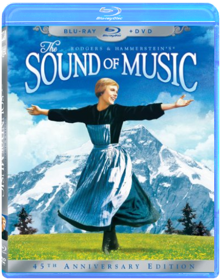 Experience the world's most beloved family film as never before with this 3-disc 45th Anniversary Edition of Rodgers & Hammerstein's® The Sound of Music, Winner of five 1965 Academy Awards®, including Best Picture!In this true-life story, Julie Andrews lights up the screen as Maria, a spirited young woman who leaves the convent to bring love and music to the home of Captain von Trapp (Christopher Plummer) and his seven children. The Tillman Story 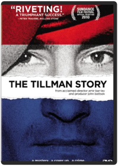 Pat Tillman gave up his professional football career to join the Army Rangers in 2002—and became an instant symbol of patriotic fervor and unflinching duty. But the truth about Pat Tillman is far more complex, and ultimately more heroic, than the caricature created by the media. And when the government tried to turn his death into war propaganda, they took on the wrong family. From her home in the Santa Cruz mountains, Pat’s mother, Dannie Tillman, led the family’s crusade to reveal the truth beneath the mythology of their son’s life and death. Featuring candid and revelatory interviews with Pat’s fellow soldiers as well as his family, Amir Bar-Lev’s emotional and insightful film not only shines a light on the shady aftermath of Pat’s death and calls to task the entire chain of command but also examines themes as timeless as the notion of heroism itself.To Rome With Love Romance! Adventure! Hilarity! Italy! Woody Allen leads this all-star cast on a rollicking ride through the streets of one of the world's greatest cities. Lovers and Fianc‚es Opera Singers and Architects the talented and the famous and the youthful and the wise are all players within this ensemble tour-de-force as their stories and lives magically criss-cross and collide throughout this engaging film. Also starring Alec Baldwin Roberto Benigni Pen‚lope Cruz Judy Davis Jesse Eisenberg Greta Gerwig and Ellen Page in a movie as incredible as Rome itself.A View to a Kill 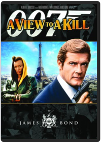 Roger Moore makes his the final appearance as the Secret Service Agent James Bond in a VIEW TO A KILL. Her Majesty's Secret Service sends Bond to stop Madcap computer industrialist Max Zorin (Christopher Walken) from triggering a massive earthquake in silicon valley and annihilating the global computer market. With the help of geoligist Stacey Sutton (Tanya Roberts) Bond must contend with May Day (Grace Jones) and Zorin s endless supply of henchmen as he jet sets from Paris to San Francisco leaving a trail of empty martini glasses and broken Q-gadgets behind him. In the 14th installment of the 007 series director John Glen delivers an unforgettable and dazzling farewell vehicle for actor Roger Moore. Packed full of sex pot debutantes whizz bang gadgetry and cliffhanger action sequences VIEW TO A KILL is an unforgettable roller coaster ride.Star Trek Into Darkness 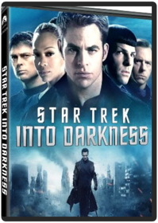 J.J. AbramsWhen the crew of the Enterprise is called back home, they find an unstoppable force of terror from within their own organization has detonated the fleet and everything it stands for, leaving our world in a state of crisis. With a personal score to settle, Captain Kirk leads a manhunt to a war-zone world to capture a one man weapon of mass destruction. As our heroes are propelled into an epic chess game of life and death, love will be challenged, friendships will be torn apart, and sacrifices must be made for the only family Kirk has left: his crewArgo 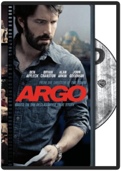 Ben AffleckBased on real events the dramatic thriller "Argo" chronicles the life-or-death covert operation to rescue six Americans which unfolded behind the scenes of the Iran hostage crisis focusing on the little-known role that the CIA and Hollywood played-information that was not declassified until many years after the event. On November 4 1979 as the Iranian revolution reaches its boiling point militants storm the U.S. Embassy in Tehran taking 52 Americans hostage. But in the midst of the chaos six Americans manage to slip away and find refuge in the home of Canadian Ambassador Ken Taylor. Knowing it is only a matter of time before the six are found out and likely killed the Canadian and American governments ask the CIA to intervene. The CIA turns to their top "exfiltration" specialist Tony Mendez to come up with a plan to get the six Americans safely out of the country. A plan so incredible it could only happen in the moviesMidnight in Paris 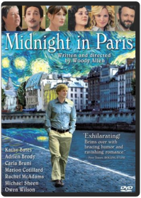 Woody AllenThis is a romantic comedy set in Paris about a family that goes there because of business, and two young people who are engaged to be married in the fall have experiences there that change their lives. It's about a young man's great love for a city, Paris, and the illusion people have that a life different from theirs would be much better.This Is 40 Judd ApatowFrom the director of Knocked Up and The 40-Year-Old Virgin comes an unfiltered, comedic look inside the life of an American family. After years of marriage, Pete (Paul Rudd) and Debbie (Leslie Mann) are approaching a milestone meltdown. As they try to balance romance, careers, parents and children in their own hilarious ways, they must also figure out how to enjoy the rest of their lives. Featuring Melissa McCarthy, Jason Segel, Megan Fox, John Lithgow and Albert Brooks, This Is 40 is a candid and heartwarming comedy about the challenges and rewards of marriage and parenthood in the modern ageThe World is Not Enough 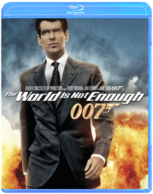 Michael AptedSaturday Night Fever 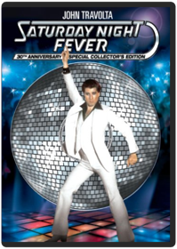 John BadhamA Brooklyn paint-store clerk primps his hair dons his white suit and becomes a disco king to Bee Gees music.Vanya on 42nd Street 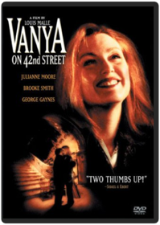 Nancy Baker, Louis MalleDuma 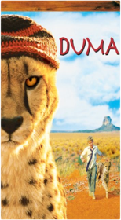 Carroll BallardBlack and White: From Snapshots to Great Shots John BatdorffGet the black and white images you want every time you pick up the camera. Now that you've bought that amazing new DSLR, you need video training that goes beyond the camera manual to teach you how to take great black and white shots. In this high-quality video, pro photographer John Batdorff takes you with him in the studio and on location to show you how to conquer the fundamentals of composition, light, contrast and texture. You'll learn the techniques that will make your portraits, landscapes, and action shots amazing.In this stunning, high-quality DVD-ROM, Batdorff starts with the basics—composition, light, contrast, and textures—and when to choose black and white. He covers all the key camera features that affect your image (regardless of what type of DSLR you have), including the shutter speed's ability to freeze and convey motion, as well as aperture's direct correlation with depth of field. Once you've captured those shots, John will tak you step-by-step through color conversion and post-processing in Adobe Photoshop Lightroom and show you cool enhancements that can be added with Nik Silver Efex Pro software to make your black and white images truly stand out. Menu Intorduction: (1:26) Chapter 1: ( 11:18) Getting Started Equipment Camera Chapter 2: (5:41) Composition Composition Basics Contrast Framing Motion Chapter 3: (6:56) Exposure Aperture, Shutter Speed, and ISO Using Filters Using Histogram Chapter 4 : (52:21) Post-Processing in Lightroom Chapter 5: Special Effects with Silver Efex Pro Getting to Know Silver Efex Pro Browser Panel Adjustments Panel Chapter 6: (17:24) Print, Post, and Share Finishing Touches Printing Sharing Online Conclusion: (1:45) This is a DVD-ROM. Total running time: 2:25 hours. System requirements: QuickTime Player 7 or greater for Mac or Windows, Display 1024x768 or greater Searching for Sugar Man 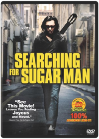 Malik BendjelloulSEARCHING FOR SUGAR MAN tells the incredible true story of Rodriguez the greatest `70s rock icon who never was. After being discovered in a Detroit bar Rodriguez's sound struck 2 renowned producers and they signed a recording deal. But when the album bombed the singer disappeared into obscurity. A bootleg recording found its way into apartheid South Africa and over the next two decades he became a phenomenon. The film follows the story of two South African fans who set out to find out what really happened to their hero.West of Memphis 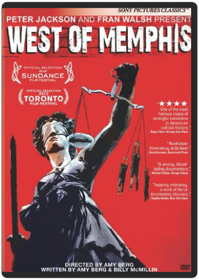 Amy BergFrom Academy Awardr-nominated filmmaker Amy Berg (2006, Best Documentary Feature, Deliver Us From Evil) in collaboration with the multiple Academy Awardr-winning team of Peter Jackson and Fran Walsh (2003, Best Picture & Best Adapted Screenplay, The Lord of the Rings: The Return of the King), WEST OF MEMPHIS tells the untold story behind an extraordinary and desperate fight to stop the State of Arkansas from killing an innocent man. Told and produced by those who lived it, Damien Echols and Lorri Davis, the film uncovers new evidence surrounding the 1993 murders of three eight-year-old boys in the small town of West Memphis, Arkansas, and exposes the wrongful conviction of three teenagers who lost 18 years of their lives imprisoned for crimes they did not commit.Mastering Advanced Git McCullough abd BerglundMastering Git McCullough and BerglundParadise Lost 3: Purgatory 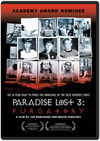 Joe Berlinger, Bruce SinofskyProduct DescriptionPARADISE LOST 3: PURGATORY, the conclusion of Joe Berlinger and Bruce Sinofsky s award-winning trilogy that spawned a worldwide movement to free three convicted men, tells the complete story of one of the most notorious child murder cases in U.S. history. Beginning with the 1993 murders, the film chronicles the 18-year fight to prove the innocence of the West Memphis Three; Damien Echols, Jason Baldwin and Jessie Misskelley, incarcerated for an alleged Satanic ritual killing the convicted men, and their supporters worldwide, maintain they did not commit. With Echols on death row and Baldwin and Misskelley serving life sentences, PARADISE LOST 3 examines a horrifying crime with fresh insights that only the passage of time can provide. Facts are reexamined, new evidence is revealed, and new suspects are scrutinized. With an extraordinary perspective of three films spanning nearly two decades, PARADISE LOST 3 is a provocative examination of American justice and a celebration of the power of cinema to effect social change. Awards Nominee, Best Documentary Feature Academy Award®Best Documentary, National Board of ReviewNominee Outstanding Directorial Achievement in Documentary, Director s Guild of AmericaOfficial Selection, Toronto International Film FestivalMost Valuable Documentary of the Year, Berlin s Cinema for Peace Awards Zero Dark Thirty 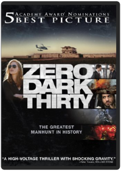 Kathryn BigelowFor a decade, an elite team of intelligence and military operatives, working in secret across the globe, devoted themselves to a single goal: to find and eliminate Osama bin Laden. Zero Dark Thirty reunites the Oscar winning team of director-producer Kathryn Bigelow and writer-producer Mark Boal (The Hurt Locker) for the story of history's greatest manhunt for the world's most dangerous man.Sleepwalk With Me 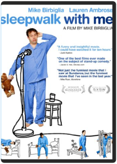 Mike BirbigliaWinner of a 2012 Audience Award at Sundance, comedian Mike Birbiglia directed and stars in this sincere and hilarious film, based on his off-Broadway show and bestselling book. It's also the first movie from Ira Glass and co-produced by "This American Life." The story: when an aspiring stand-up fails to express his true feelings about his girlfriend and his stalled career, his anxiety comes out in increasingly funny and dangerous sleepwalking incidents. SLEEPWALK WITH ME features Lauren Ambrose (Six Feet Under), Carol Kane (Taxi), James Rebhorn (Meet the Parents), Cristin Milioti (star of Broadway's "Once"), plus comedians Marc Maron, Kristen Schaal, Wyatt Cenac, Jessi Klein, Henry Phillips and David Wain. Bonus Material--Making Of- -Outtakes- -Q&A with Ira Glass & Mike Birbiglia moderated by Joss Whedon at the Writers Guild Foundation- -Behind the Scenes Shorts- -Trailer- -Commentary with Mike Birbiglia & Ira Glass Mission: Impossible - Ghost Protocol 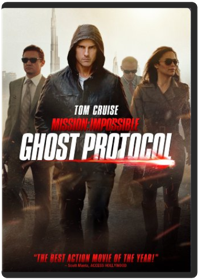 Brad BirdNo plan. No backup. No choice. Agent Ethan Hunt (Tom Cruise) and his elite team (Jeremy Renner, The Avengers and Simon Pegg, Star Trek) go underground after a bombing of the Kremlin implicates the IMF as international terrorists. While trying to clear the agency's name, the team uncovers a plot to start a nuclear war. Now, to save the world, they must use every high-tech trick in the book. The mission has never been more real, more dangerous, or more impossible.Blue Bird Robert Bischoff, Walter LangVisually beautiful, full of imaginative sets, and splendidly photographed in rich Technicolor, this enchanting fantasy was Twentieth Century Fox's answer to "The Wizard of Oz". In a rare departure from her usual screen persona, Shirley plays a selfish, spoiled little girl named Mytyl, who doesn't appreciate her loving family. Only after a good fairy sends her and her brother (Johnny Russell) on a journey to find "the bird that means happiness" does she end up discovering happiness right in her own home.The Last Picture Show: The Definitive Director's Cut 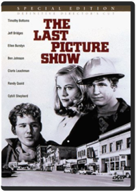 Peter BogdanovichReleased in 1971 to critical acclaim and public controversy, THE LAST PICTURE SHOW garnered eight Academy Award(r) nominations (including Best Picture) and was hailed as the most important work by a young American director since Citizen Kane. A surprisingly frank, bittersweet drama of social and sexual mores in small-town Texas, the film features a talent-laden cast led by Jeff Bridges (The Mirror Has Two Faces), Cybill Shepherd (TV's "Cybill") and Timothy Bottoms (The Man in the Iron Mask). Cloris Leachman (TV's "The Mary Tyler Moore Show") and Ben Johnson (Rio Grande) each won Oscars(r) for their work in supporting roles. This modern classic is a must-have for every movie lover.House of the Dead 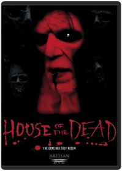 Uwe BollJonathan Cherry, Tyron Leitso. When a group of college students take their Florida spring break party to a deserted island off the coast, they are attacked by bloodthirsty zombies, and the only way to fight back is to locate weapons for defense. 2003/color/90 min/R/widescreen.Sunshine 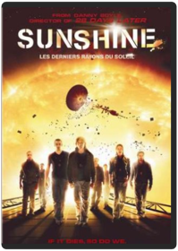 Danny BoyleChris Evans, Cillian Murphy, and Michelle Yeoh star in this sci-fi film from Danny Boyle. Extras included deleted scenes, alternate ending, web production diaries, commentary by Boyle, and more.The Dark Knight 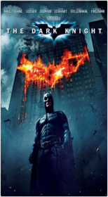 Warner Bros.The Central Park Five Ken Burns, Sarah BurnsThis new film from award-winning filmmaker Ken Burns tells the story of the five black and Latino teenagers from Harlem who were wrongly convicted of raping a white woman in New York City’s Central Park in 1989. The film chronicles the Central Park Jogger case, for the first time from the perspective of these five teenagers whose lives were upended by this miscarriage of justice. This DVD features subtitles in English (SDH).GoldenEye 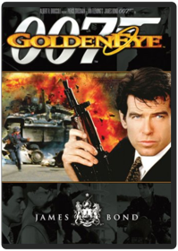 Martin CampbellPierce Brosnan ignites the screen in his first adventure as the unstoppable James Bond. When a powerful satellite system falls into the hands of a former ally-turned-enemy, only 007 can save the world from an awesome space weapon that — in one short pulsEvel Knievel 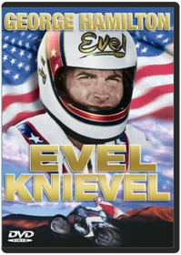 Marvin J. ChomskyThis action packed biography stars George Hamilton as daredevil Evel Knievel reenacting his most spectacular stunts.Rent 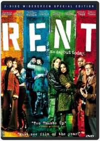 Chris Columbus, Jeffrey SchwarzRosario Dawson, Taye Diggs, Anthony Rapp. In a grimy New York apartment on the Lower East Side, a group of eight artists struggle just to ge tby, plagued by poverty, drug addiction and AIDS in this Pulitzer Prize-winning Broadway play-turned-movie. 2 DVDs. 2005/color/135 min/PG-13/widescreen.The Paperboy 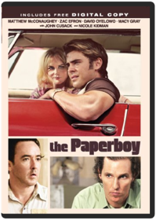 Lee DanielsA man (John Cusack) convicted of killing a seedy sheriff is given a new life when a female pen pal (Nicole Kidman) enlists the aid of two journalists to try and get him off death row. PRECIOUS' Lee Daniels adapts Pete Dexter's novel.Wild Horse Wild Ride 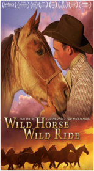 Alex Dawson, Greg GricusStop Making Sense 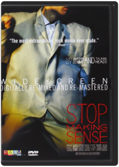 Lisa Day, Jonathan DemmeTalking Heads Stop Making Sense UK DVDSwimming To Cambodia 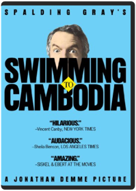 Jonathan DemmeSwimming to Cambodia is a 1987 film directed by Jonathan Demme (Silence of the Lambs) in which actor Spalding Gray performs an amusing monologue that mostly recounts his trip to Southeast Asia to create the role of the U.S. Ambassador's aide in the 1984 Oscar-winning film The Killing Fields.Fashion with a glamour twist Frank DoorhofThe Created Image David duCheminJ. Edgar 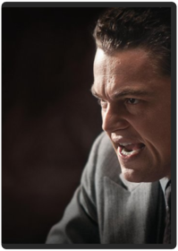 Clint EastwoodLeonardo DiCaprio (Inception, Blood Diamond) stars as J. Edgar Hoover, head of the Federal Bureau of Investigation for nearly 50 years. Hoover was feared, admired, reviled and revered, a man who could distort the truth as easily as he upheld it. His methods were at once ruthless and heroic, with the admiration of the world his most coveted prize. But behind closed doors, he held secrets that would have destroyed his image, his career and his life. Oscar Winner Clint Eastwood (Gran Torino, Million Dollar Baby, Unforgiven) directs an all-star cast including Naomi Watts (21 Grams), Armie Hammer (The Social Network) and Oscar Winner Judi Dench (Shakespeare in Love) as Hoover’s overprotective mother.Anonymous 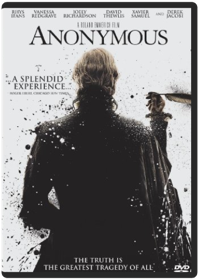 Roland EmmerichSet in the political snake-pit of Elizabethan England, Anonymous speculates on an issue that has for centuries intrigued academics and brilliant minds... who was the author of the plays credited to William Shakespeare? Anonymous poses one possible answer, focusing on a time when cloak-and-dagger political intrigue, illicit romances in the Royal Court, and the schemes of greedy nobles hungry for the power were exposed in the most unlikely of places: the London stage.White House Down 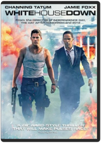 Roland EmmerichCapitol Policeman John Cale (Channing Tatum) has just been denied his dream job with the Secret Service of protecting President James Sawyer (Jamie Foxx). Not wanting to let down his little girl with the news, he takes her on a tour of the White House, when the complex is overtaken by a heavily armed paramilitary group. Now, with the nation’s government falling into chaos and time running out, it's up to Cale to save the president, his daughter, and the country.8 1/2 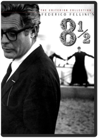 Federico FelliniOne of the greatest films about film ever made, Federico Fellini's 8 1/2 (Otto e Mezzo) turns one man's artistic crisis into a grand epic of the cinema. Guido Anselmi (Marcello Mastroianni) is a director whose film-and life-is collapsing around him. An early working title for the film was La Bella Confusione (The Beautiful Confusion), and Fellini's masterpiece is exactly that: a shimmering dream, a circus, and a magic act. The Criterion Collection is proud to present the 1963 Academy Award® winner for Best Foreign-Language Film-one of the most written about, talked about, and imitated movies of all time-in a beautifully restored new digital transfer. Disc two features Fellini's rarely seen first film for television, Fellini: A Director's Notebook (1969). Produced by Peter Goldfarb, this imagined documentary of Fellini is a kaleidoscope of unfinished projects, all of which provide a fascinating and candid window into the director's unique and creative process.La Dolce Vita 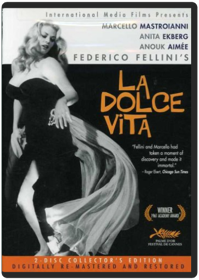 Federico FelliniLA DOLCE VITALa Strada Federico FelliniGiuletta Masina, Anthony Quinn, Richard Basehart. The Oscar-winning study of a tragic waif who is enslaved by her love for a circus strongman, eventually finding comfort with a kindhearted clown. Directed by Federico Fellini. In Italian with English audio & subtitles. 1954/b&w/107 min/NR/fullscreen.jQuery UI Development Ben FhalaThe Girl with the Dragon Tattoo David FincherHarriet Vanger, disappeared over forty years ago. Years later, her aged uncle continues to seek the truth. He hires Mikael Blomkvist (Daniel Craig), a crusading journalist recently trapped by a libel conviction, to investigate. Aided by the pierced and tattooed punk prodigy Lisbeth Salander (Rooney Mara) they tap into a vein of unfathomable iniquity and astonishing corruption.The Social Network 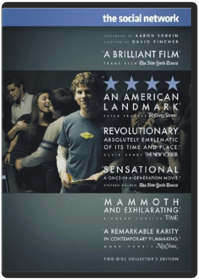 David FincherDavid Fincher's The Social Network is the stunning tale of a new breed of cultural insurgent: a punk genius who sparked a revolution and changed the face of human interaction for a generation, and perhaps forever. Shot through with emotional brutality and unexpected humor, this superbly crafted film chronicles the formation of Facebook and the battles over ownership that followed upon the website's unfathomable success. With a complex, incisive screenplay by Aaron Sorkin and a brilliant cast including Jesse Eisenberg, Andrew Garfield and Justin Timberlake, The Social Network bears witness to the birth of an idea that rewove the fabric of society even as it unraveled the friendship of its creators.Gangster Squad 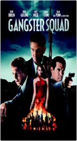 Ruben FleischerFuntional Thinking Neal FordTomorrow Never Dies 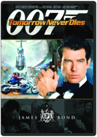 Dominique Fortin, Roger SpottiswoodePierce Brosnan leaps into action as Agent 007 in this spectacular thrill ride of death-defying stunts and amazing high-tech gadgets. In the most electrifying Bond film yet, the unstoppable action hero must prevent a tremendous disaster ripped from tomorrowÃ"â??s headlines. Someone is pitting the worldÃ"â??s superpowers against each other Ã"â?" and only James Bond can stop it. When a British warship is mysteriously destroyed in Chinese waters, the world teeters on the brink of WWIII Ã"â?" until 007 zeros in on the true criminal mastermind. BondÃ"â??s do-or-die mission takes him to Elliot Carver (Jonathan Pryce), a powerful industrialist who manipulates world events as easily as he changes headlines from his global media empire. After soliciting help from CarverÃ"â??s sexy wife, Paris (Teri Hatcher), Bond joins forces with a stunning yet lethal Chinese agent, Wai Lin (Michelle Yeoh), in a series of explosive chases, brutal confrontations and breathtaking escapes as they race to stop the presses on CarverÃ"â??s next planned news story: global pandemonium! With powerhouse action sequences, including a wild motorcycle pursuit through (and over!) Saigon, Tomorrow Never Dies is a thrilling action-adventure Ã"â??that roars from start to finish with the throttle wide open (Gene Shalit, NBC-TV)!Cabaret: 40th Anniversary 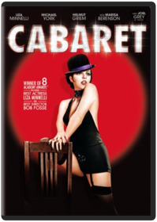 Bob FosseLiza Minnelli stars in this musical extravaganza set in a Berlin cabaret in 1931, where the rising tide of Nazism has direct effectson the lives of several individuals. A female girlie club entertainer in Weimar Republic era Berlin romances two men while the Nazi Party rises to power around them.Paragraph 175 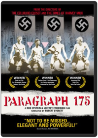 Jeffrey Friedman, Rob EpsteinThe Nazi persecution of homosexuals may be the last untold story of the Third Reich. Directed by Oscar winners Rob Epstein and Jeffrey Friedman (COMMON THREADS: STORIES FROM THE QUILT and THE TIMES OF HARVEY MILK), PARAGRAPH 175 fills a crucial gap in the historical record, and reveals the lasting consequences of this hidden chapter of 20th century history. These are stories of survivors - sometimes bitter, but just as often filled with irony and humor; tortured by their memories, yet infused with a powerful will to endure. Their moving testimonies, rendered with evocative images of their lives and times, tell a haunting, compelling story of human resistance. Intimate in its portrayals, sweeping in its implications, PARAGRAPH 175 raises provocative questions about memory, history and identity.Olympus Has Fallen 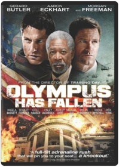 Antoine FuquaDisgraced former Presidential guard Mike Banning finds himself trapped inside the White House in the wake of a terrorist attack; using his inside knowledge, Banning works with national security to rescue the President from his kidnappers.The Bourne Legacy 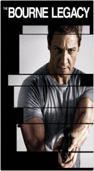 Tony GilroyLicence To Kill 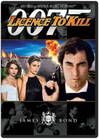 John Glen (II)James Bond is catapulted into his most passionate adventure — not for country, not for justice, but for personal revenge. As Agent 007 turns renegade, Timothy Dalton brings urgency, charm, and deadly determination to his portrayal of the screen's greatesFor Your Eyes Only 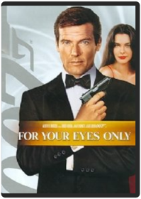 John GlenJames Bond is thrust into one of his most riveting adventures in this jam-packed free-for-all of outrageous stunts, passionate encounters and exciting confrontations. Roger Moore portrays Agent 007 with lethal determination in a plot that finds him racingThe Living Daylights 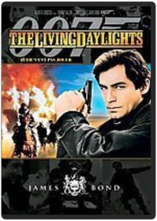 John GlenArmed with razor-sharp instincts and a licence to kill, James Bond battles diabolical arms merchants bent on world domination in this thrilling, lightning-paced adventure. Timothy Dalton brings energy, humour and ruthless cunning to his debut performanceOctopussy 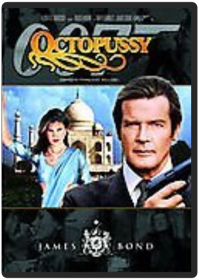 John GlenRoger Moore, Maud Adams. While searching in India for the murderer of a fellow secret agent, 007 encounters the beautiful but deadly Octopussy. 1983/color/130 min/PG/widescreen.Mastering Exposure in Digital Photography: Learn by Video 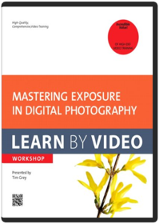 Tim Grey, video2brainThis innovative product uses interactive video to explain how to manage camera exposure, a topic many photographers don't fully understand. Exposure settings have tremendous impact on the overall brightness and contrast of an image and ultimately its quality. Viewers will learn how to optimize exposure and maximize detail, minimize noise, and create the best images possible. This workshop begins with an overview of key exposure concepts, then discusses various exposure modes and some advanced concepts and techniques to help viewers master the concepts and practice of photographic exposure. It also covers some post-processing techniques related to exposure and includes some real-world examples that review core exposure concepts.Experienced instructor Tim Grey presents more than 3 hours of exceptional quality video tutorials, complete with lesson files, assessment quizzes, and review materials. The video is wrapped in a unique interface that allows the viewer to jump to any topic and also bookmark individual sections for later review. The unique Watch-and-Work mode shrinks the video into a small window to allow the student to work alongside the instructor. Project files used in the lessons are included on the disc so viewers can practice what they've learned, and interactive review questions help reinforce freshly gained knowledge. The DVD-ROM is bundled with a printed booklet that provides supplemental material to enhance the video training. Zabbix Network Monitoring Essentials Christoph HaasThe Next Three Days 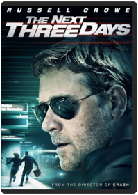 Paul HaggisLife seems perfect for John Brennan until his wife, Lara, is arrested for a murder she says she didn’t commit. Three years into her sentence, John is struggling to hold his family together, raising their son and teaching at college while he pursues every means available to prove her innocence. With the rejection of their final appeal, Lara becomes suicidal and John decides there is only one possible, bearable solution: to break his wife out of prison. Refusing to be deterred by impossible odds or his own inexperience, John devises an elaborate escape plot and plunges into a dangerous and unfamiliar world, ultimately risking everything for the woman he loves. Lionsgate presents a Hwy 61 Films / Lionsgate production. The Next Three Days stars Russell Crowe, Elizabeth Banks, Brian Dennehy, Olivia Wilde and Liam Neeson, and is directed by Paul Haggis from a screenplay by Paul Haggis. The Next Three Days is produced by Michael Nozik and Paul Haggis, and Olivier Delbosc and Marc Missonnier.The Artist 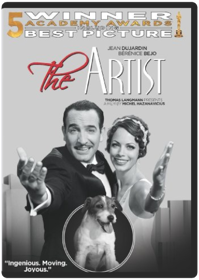 Michel HazanaviciusHollywood 1927. George Valentin (Jean Dujardin) is a silent movie superstar. The advent of the talkies will sound the death knell for his career and see him fall into oblivion. For young extra Peppy Miller (Berenice Bejo), it seems the sky's the limit - major movie stardom awaits. The Artist tells the story of their interlinked destinies.42 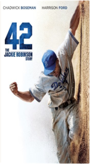 Brian HelgelandThe Three Musketeers 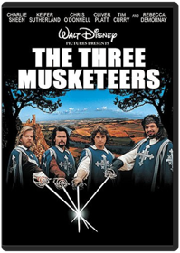 Stephen HerekNab the star-studded comedy-adventure that dazzled moviegoers everywhere! It's the action-packed tale of three loyal swordsmen (Charlie Sheen, Kiefer Sutherland, Oliver Platt) who are joined by an eager recruit (Chris O'Donnell) to protect the King of France. Together, the foursome battle enormous odds in their attempt to defeat an evil royal advisor (Tim Curry) and a seductive envoy (Rebecca De Mornay) plotting to overthrow France's crown — fighting against both time and scores of enemies! You'll cheer out loud when these exciting muskeeteers face danger, fun, and adventure at every turn — proving they are the greatest swashbucklers who ever lived!New Order - New Order Story 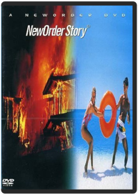 Kevin Hewitt, Derick WilliamsOriginally released in 1994, this definitive New Order documentary traces the history of the band all the way back to the Joy Division days. This extended version contains additional interviews and live footage-over two hours available for the first time as a single DVD release. [138 MIN.; COLOR; NOT RATED]Lawless 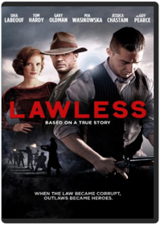 John HillcoatLAWLESS is the true story of the infamous Bondurant Brothers: bootlegging siblings who made a run for the American Dream in Prohibition-era Virginia. In this epic gangster tale, inspired by true-life tales of author Matt Bondurant’s family in his novel “The Wettest County In The World,” the loyalty of three brothers is put to the test against the backdrop of the nation’s most notorious crime wave.Please Give Nicole HolofcenerA family looking for some extra space gets drawn into a difficult relationship with the folks next door in this comedy drama from writer and director Nicole Holofcener. Kate (Catherine Keener) and Alex (Oliver Platt) are a couple living in New York City who run a successful store specializing in vintage furniture. Kate and Alex have a teenage daughter, Abby (Sarah Steele) and their apartment is starting to feel a bit small for the three of them; Kate and Alex own the unit next door to them, and once the flat becomes vacant, they plan to knock out a wall and take over the space. However, Andra (Ann Morgan Guilbert), their tenant, is an elderly woman with a poor disposition who doesn't seem eager to go anywhere soon, and it's occurred to Kate and Alex that they're probably going to have wait for her to die, since evicting her would be very awkward. Hoping to make the best of the situation, Kate tries to strike up a friendship with Andra and her fiercely protective granddaughter Rebecca (Rebecca Hall), but Andra isn't especially interested in making new friends, and Rebecca's sister, Mary (Amanda Peet), isn't much easier to deal with.Les Misérables Tom HooperHugh Jackman, Academy Award winner Russell Crowe and Anne Hathaway star in this critically-acclaimed adaptation of the epic musical phenomenon. Set against the backdrop of 19th-century France, Les Misérables tells the story of ex-prisoner Jean Valjean (Jackman), hunted for decades by the ruthless policeman Javert (Crowe), after he breaks parole. When Valjean agrees to care for factory worker Fantine's (Hathaway) young daughter, Cosette, their lives change forever. This enthralling story is a timeless testament to the survival of the human spirit and "an unforgettable experience" (Richard Roeper, RichardRoeper.com).DVD - Region 1; Blu-ray- Region Free. The King's Speech Tom HooperAfter the death of his father King George V (Michael Gambon) and the scandalous abdication of King Edward VIII (Guy Pearce), Bertie (Colin Firth) who has suffered from a debilitating speech impediment all his life, is suddenly crowned King George VI of England. With his country on the brink of war and in desperate need of a leader, his wife, Elizabeth (Helena Bonham Carter), the future Queen Mother, arranges for her husband to see an eccentric speech therapist, Lionel Logue (Geoffrey Rush). After a rough start, the two delve into an unorthodox course of treatment and eventually form an unbreakable bond. With the support of Logue, his family, his government and Winston Churchill (Timothy Spall), the King will overcome his stammer and deliver a radio-address that inspires his people and unites them in battle. Based on the true story of King George VI, "The King's Speech" follows the Royal Monarch's quest to find his voice.The Art Behind the Hadshot Peter HurleyKali Linux - Backtrack Evolved: Assuring Security by Penetration Testing Justin HutchensDead Man Jim JarmuschJohnny Depp (CHOCOLAT) delivers a remarkable performance in this highly acclaimed tale of adventure and intrigue in the wild, wild west! A young man in search of a fresh start, William Blake (Depp) embarks on an exciting journey to a new town ... never realizing the danger that lies ahead. But when a heated love triangle ends in double murder, Blake finds himself a wanted man, running scared — until a mysterious loner teaches him to face the dangers that follow a "dead man." With an outstanding supporting cast including Gabriel Byrne (THE USUAL SUSPECTS) and Robert Mitchum (CAPE FEAR), and a sizzling soundtrack, DEAD MAN is another motion picture triumph from filmmaker Jim Jarmusch.Advanced Penetration Testing for Highly-Secured Environments Aaron JohnsLooper Rian JohnsonIn the futuristic action thriller Looper, time travel will be invented - but it will be illegal and only available on the black market. When the mob wants to get rid of someone, they will send their target 30 years into the past where a 'looper' - a hired gun, like Joe (Joseph Gordon-Levitt) - is waiting to mop up. Joe is getting rich and life is good - until the day the mob decides to 'close the loop,' sending back Joe's future self (Bruce Willis) for assassination. The film is written and directed by Rian Johnson and also stars Emily Blunt, Paul Dano, and Jeff Daniels.Responsive Web Design: Learn by Video Tim KadlecResponsive design isn’t merely another technique. It’s a way of building sites and applications that requires a fundamental shift in approach. From planning to development, every aspect of building for the web is affected.This video course starts by explaining the three primary components of responsive design: fluid layouts, media queries and responsive images. With a firm understanding of those in place, we branch out and explore how responsive design impacts workflow, how to maintain the hierarchy of content, how to use feature detection to enhance the experience, how to organize your JavaScript to play along nicely, how to optimize responsive sites for performance—and more. Course objectives & goals: This course arms its students with the skills necessary to start building quality responsive sites today. By the end of the course, students will know how to: Use fluid layouts, media queries and fluid images to create responsive layoutsUse responsive image techniques to serve appropriately sized images to a variety of devicesEnsure that the hierarchy of content is preserved across screen sizesEnhance the functionality of your site with feature detectionImprove the performance of your site and avoid becoming another example of "fat" responsive designAdjust your existing workflow to better accomodate multi-device design and developmentDetermine what devices to test on and how Course Requirements: To get the most out of this course, you'll need your favorite code editor and ideally a couple of devices to test on. If you don't have a tablet and phone for testing, then you'll want to get ahold of a simulator or use one of the many device testing services online to follow along. You could, theoretically, follow along by resizing your browser, but I highly recommend against it—you'll get much more out of it by seeing how things behave on different devices. Side by Side Christopher KenneallyJoin Keanu Reeves on a tour of the past and the future of filmmaking in SIDE BY SIDE. Since the invention of cinema, the standard format for recording moving images has been film. Over the past two decades, a new form of digital filmmaking has emerged, creating a groundbreaking evolution in the medium. Reeves explores the development of cinema and the impact of digital filmmaking via in-depth interviews with Hollywood masters such as James Cameron (Avatar), David Fincher (The Social Network), David Lynch (Mulholland Drive), Martin Scorsese (The Departed), Robert Rodriguez (Sin City), Steven Soderbergh (The Ocean s Trilogy), and many more.Special Features Deleted Scenes, Presented By American Express; Additional Interviews with Filmmakers; English Subtitles for the Deaf and Hard of Hearing Never Say Never Again Irvin KershnerSean Connery is back for his final performance as superagent James Bond in this high-velocity action thriller from the director of The Empire Strikes Back. When two atomic warheads are hijacked by the evil SPECTRE organization, Agent 007 is hurled into an explosive, pulse-pounding race to save the world from nuclear terrorists!Star Wars, Episode V: The Empire Strikes Back Irvin KershnerPaul Williams Still Alive Stephen KesslerHe won Grammys® and an Academy Award®; wrote many #1 songs; starred in a Brian DePalma movie; put out his own hit records and albums; was a guest on The Tonight Show fifty times; and is the president of ASCAP... and you might not have heard of him. In the 1970's, Paul Williams was the singer / actor / songwriter that emotional, alienated teenage boys all over the world wanted to be, a sex symbol before MTV, when sex symbols could be 5"2 and sing songs about loneliness with the Muppets.Somewhere Between Linda Goldstein KnowltonIn profiling Chinese adoptees in contemporary America, this deeply moving documentary from Linda Goldstein Knowlton (The World According to Sesame Street) illustrates that even the most specific of experiences can be universally relatable. Of the roughly 80,000 girls who have been adopted from China since 1989 a decade after China implemented its One Child Policy the film intimately follows four teenagers: Haley, Jenna, Ann and Fang.These four wise-beyond-their-years yet typical American teens reveal a heartbreaking sense of self-awareness as they attempt to answer the uniquely human question, "Who am I?" They meet and bond with other adoptees, some journey back to China to reconnect with the culture, and some reach out to the orphaned girls left behind. In their own ways, all attempt to make sense of their complex identities. Issues of belonging, race and gender are brought to life through these articulate subjects, who approach life with honesty and open hearts. Contraband Baltasar KormákurMark Wahlberg stars as legendary smuggler Chris Farraday, who has left his criminal past behind to be with his wife (Kate Beckinsale) and sons. When a ruthless drug kingpin (Giovanni Ribisi) threatens his family, Farraday must summon his old skills and contacts for one last run. Contraband takes you to the cutthroat underground world of international smuggling, and on a thrilling adventure that critics are calling "dynamic, intense and gritty!" - Mark S Allen, CBS/CW-TV (Sacramento).2001: A Space Odyssey Stanley KubrickFull Metal Jacket Stanley KubrickThe story of an 18-year-old marine recruit named Private Joker - from his carnage-and-machismo boot camp to his climactic involvement in the heavy fighting in Hue during the 1968 Tet Offensive.Imposter Bart LaytonIn 1994 a 13-year-old boy disappears without a trace from San Antonio, Texas. Three and a half years later he is found alive, thousands of miles away in a village in southern Spain with a story of kidnap and torture. His family is overjoyed to bring him home. But all is not quite as it seems. The boy- bears many of the same distinguishing marks he always had,- but why does he now have a strange accent? Why does he look so different? And why doesn't the family seem to notice these glaring inconsistencies? It's only when an investigator starts asking questions that this strange tale takes an even stranger turn.Life of Pi Ang LeeEmbark on the adventure of a lifetime in this visual masterpiece from Oscarr winner Ang Lee*, based on the best-selling novel. After a cataclysmic shipwreck, young Pi Patel finds himself stranded on a lifeboat with the only other survivor - a ferocious Bengal tiger named Richard Parker. Bound by the need to survive, the two are cast on an epic journey that must be seen to be believed.Gulliver's Travels  Fair Game Doug LimanFrom the director of The Bourne Identity comes this riveting thriller inspired by the experiences of real-life CIA officer Valerie Plame (Academy Award® nominee Naomi Watts). When Plame's retired ambassador husband Joe Wilson (played by Academy Award® winner Sean Penn) writes a newspaper article challenging the basis for the U.S. war on Iraq, the White House leaks Plame s undercover status leaving her international contacts vulnerable, her career in shambles and her life in danger. Crackling with sharp dialogue, gripping intrigue and heart-pounding suspense, Fair Game is the adventure that s so unbelievable, it can only be realE.T. The Extra-Terrestrial Anniversary Edition Carol Littleton, Steven SpielbergRelive the adventure and magic in one of the most beloved motion pictures of all-time, E.T. The Extra-Terrestrial, from Academy Award-winning director Steven Spielberg. Captivating audiences of all ages, this timeless story follows the unforgettable journey of a lost alien and the 10-year-old boy he befriends. Join Elliot (Henry Thomas), Gertie (Drew Barrymore) and Michael (Robert MacNaughton) as they come together to help E.T. find his way back home. Now digitally remastered with enhanced picture and sound for its 30th Anniversary, E.T. The Extra-Terrestrial is one of the great American films (Leonard Maltin) that forever belongs in the hearts and minds of audiences everywhere.Mamma Mia! The Movie Phyllida LloydWidescreen. Meryl Streep, Pierce Brosnan and Colin Firth star in this big screen adaption of the hit musical based around the timeless hits of Swedish pop sensations Abba. The plot sets in motion when Sophie (Amanda Seyfried, Mean Girls), daughter of Donna (Streep), sends a letter to three men, inviting them to her wedding—because after reading her mother's diary, she suspects that one of them is her father. When all three arrive at the Greek island where Donna runs a hotel, Donna flips out and finds that passions she thought she'd laid aside are coming back to life. Music and fun ensue.Cloudy with a Chance of Meatballs Phil Lord, Christopher MillerCloudy with a Chance of Meatballs tells the story of an eccentric wannabe scientist, Flint Lockwood. His latest contraption is a miraculous device designed to solve the world hunger crisis. But when Flint bites off more than he can chew, he sets in motion a global disaster of epic proportions. Based on the #1 best-selling book by Judi and Ron BarrettThe Great Gatsby Baz LuhrmannThe Great Gatsby follows Fitzgerald-like, would-be writer Nick Carraway as he leaves the Midwest and comes to New York City in the spring of 1922, an era of loosening morals, glittering jazz and bootleg kings. Chasing his own American Dream, Nick lands next door to a mysterious, party-giving millionaire, Jay Gatsby, and across the bay from his cousin Daisy and her philandering, blue-blooded husband Tom Buchanan. It is thus that Nick is drawn into the captivating world of the super rich, their illusions, loves and deceits. As Nick bears witness, within and without the world he inhabits, he pens a tale of impossible love, incorruptible dreams and high-octane tragedy, and holds a mirror to our own modern times and struggles.And Now For Something Completely Different Ian MacNaughtonThe best of Monty Python's Flying Circus in their first feature film. Includes their most memorable skits and cartoons. 1972/color/89 min/PG/fullscreen.Miracle On 34th Street Les MayfieldKiller Elite Gary McKendryJason Statham (The Italian Job), Academy Awardr nominee Clive Owen (Inside Man) and Academy Awardr winner Robert De Niro (Raging Bull) star in Killer Elite, "one of the best action thrillers of the year!" (Richard Roeper) When two of the world's most elite operatives — Danny, a retired contract killer (Statham), and Hunter, his longtime mentor (De Niro) — go up against the cunning leader of a secret military society (Owen), their hunt takes them around the globe from Australia to Paris, London, and the Middle East. As the stakes rise along with the body count, Danny and Hunter are soon plunged into an action-packed game of cat-and-mouse where no one is what they seem. Based on a shocking true story, it's an explosive, no-mercy thrill ride where the predator ultimately becomes the prey.Taken 2 Olivier MegatonLiam Neeson returns as Bryan Mills, the ex-CIA operative who stopped at nothing to rescue his daughter from sadistic kidnappers. When the father of one of the kidnappers swears revenge, it is Bryan and his wife who find themselves "taken" hostage in Istanbul. To survive, Bryan must enlist the help of an unlikely ally and use his brutally efficient skills to take out his heavily-armed foes one by one.Skyfall Sam MendesDaniel Craig is back as James Bond 007 in SKYFALL, the 23rd installment of the longest-running film franchise in history. In SKYFALL, Bond's loyalty to M (Judi Dench) is tested as her past returns to haunt her. 007 must track down and destroy the threat, no matter how personal the cost. When Bond's latest assignment goes gravely wrong and agents around the world are exposed, MI6 is attacked forcing M to relocate the agency. These events cause her authority and position to be challenged by Mallory (Ralph Fiennes), the new Chairman of the Intelligence and Security Committee. With MI6 now compromised from both inside and out, M is left with one ally she can trust: Bond. 007 takes to the shadows - aided only by field agent Eve (Naomie Harris) - following a trail to the mysterious Silva (Javier Bardem), whose lethal and hidden motives have yet to reveal themselves.Moneyball Bennett MillerOakland A's general manager Billy Beane (Brad Pitt) challenges the system and defies conventional wisdom when his is forced to rebuild his small-market team on a limited budget. Despite opposition from the old guard, the media, fans and their own field manager (Philip Seymour Hoffman), Beane - with the help of a young, number-crunching, Yale-educated economist (Jonah Hill) - develops a roster of misfits…and along the way, forever changes the way the game is played.Responsive Web Design – From Concept to Complete Site  Johnny D. David MorinJohnny is an inspirational family story about loss and how one young boy's mission, before he is called to heaven, makes a difference for a family struggling to find their way back after a tragedy devastates them. When Dr. Drew Carter (Mel Fair) tragically lost his ten year old son in a car accident while his wife Julia (Musetta Vander) was driving, he didn't expect to lose his whole family as well. Since the accident, Julia is emotionally absent from Drew and their daughter Kayla (Aubyn Cole). When Dr. Miller (Lee Majors) refers Johnny (Jerry Phillips), a foster child with leukemia, to Drew the wheels start to turn as he sees a chance to heal his family.Johnny doesn't know what he is in for, but is convinced he's there for a special mission; a mission revealed when he enters Dr. Carter's world. This film shines brightly with hope and will move your heart and soul with its message of redemption, salvation and forgiveness. "Dove Family Approved" from The Dove Foundation. Awarded 5 out of 5 Doves and recommended for ages 12+. In Time Andrew NiccolEvery second counts in this sexy, stylish action-thriller starring Justin Timberlake and Amanda Seyfried. In a future where time is literally money and aging stops at 25, the only way to stay alive is to earn, borrow, steal or inherit more time. But when a poor, working-class man (Timberlake) is falsely accused of murder, he teams up with a beautiful heiress (Seyfried) and must figure out a way to bring down the corrupt system before their dwindling life clocks run out!Inception Christopher NolanAcclaimed filmmaker Christopher Nolan directs an international cast in this sci-fi actioner that travels around the globe and into the world of dreams. Dom Cobb (Leonardo DiCaprio) is the best there is at extraction: stealing valuable secrets inside the subconscious during the mind’s vulnerable dream state. His skill has made him a coveted player in industrial espionage but also has made him a fugitive and cost him dearly. Now he may get a second chance if he can do the impossible: inception, planting an idea rather than stealing one. If they succeed, Cobb and his team could pull off the perfect crime. But no planning or expertise can prepare them for a dangerous enemy that seems to predict their every move. An enemy only Cobb could have seen coming.Trekkies Roger NygardUses interviews with Star Trek fans and cast members to present a look at the Star Trek \fan-nomenon."Genre: Documentary Rating: PG Release Date: 19-AUG-2003 Media Type: DVD""" Great Bash OreillyPeople Pictures: Creating Authentic Photographs with Chris Orwig, DVD Chris OrwigAuthor/photographer Chris Orwig takes you on location in San Francisco to explore street, lifestyle, and environmental portraits using natural light. Chris guides you through five photo shoots with from start to finish, bringing his book People Pictures: 30 Exercises for Creating Authentic Photographs to life.Chris explores the fabric of this city with his camera by telling a story, connecting with his subjects, and practicing his craft. This is not a traditional portrait photography course. The goal isn’t flattery, but connection and depth. And there is no quicker way to learn than to try something out yourself. Chris includes assignments to encourage you to have fun and establish your own style as a portrait photographer. This stunning, high-quality DVD-ROM video is for beginning-and-intermediate photographers and is meant to change how you see the world and the pictures that you make. All that’s required is a camera, an intrepid attitude, and some imagination. ABOUT THE AUTHOR: Chris Orwig is a celebrated photographer, author, and teacher at the Brooks Institute in Santa Barbara, California. He is the author of the best-selling Visual Poetry: A Creative Guide for Making Engaging Digital Photographs (New Riders/Voices That Matter) and People Pictures: 30 Exercises for Creating Authentic Photographs (Peachpit Press). Chris brings passion and unique perspective to all that he does. See his work at chrisorwig.com. This is a DVD-ROM. Approximate run time: 163 min. SYSTEM REQUIREMENTS: QuickTime Player 7 or greater for Mac or Windows, Display 1024x768 or greater Little Shop of Horrors: Director's Cut Frank OzA skid-row florist's "mean green mother" of a monster plant is the center of "the looniest, nuttiest, most outrageous movie musical comedy in years" (Jeffrey Lyons, Sneak Preview). Rick Moranis, Steve Martin, Ellen Green, Billy Murray and other comedy greats star.HTML5 Animation and Transition Mario Andrés PagellaJohnny English Reborn Oliver ParkerInternational funnyman Rowan Atkinson (Johnny English, Mr. Bean) returns as the accidental secret agent who doesn't know fear — or danger — in this hilarious spy film spoof that's outrageous fun for the whole family! In his latest mission, Johnny English must stop a group of international assassins before they eliminate a world leader and cause global chaos. With just one shot at redemption, he will use (or misuse) the latest high-tech gadgets and every trick in his playbook to protect us all.Peanuts 1960's Collection PeanutsAll the Peanuts episodes from the 1960s remastered all in one set. Timed to release around anniversary of Woodstock Festival where Woodstock will be the mascot.Winged Migration Jacques Perrin, Jacques Cluzaud, Michel DebatsRolling Stone raved that Winged Migration, the critically acclaimed, awe-inspiring documentary, is"A movie miracle! It soars! You feel privileged!" Witness as five film crews follow a rich variety of bird migrations through 40 countries and each of the seven continents. With teams totalling more than 450 people, 17 pilots and 14 cinematographers used planes, gliders, helicopters and balloons to fly alongside, above, below and in front of their subjects. The result is a film of staggering beauty that Entertainment Weekly hailed as "Mesmerizing!" and the Los Angeles Times applauded as "Breathtaking! As lofty as it is exhilarating!" Open your eyes to the wonders of the natural world as you fly along with the world’s most gorgeous birds through areas.The Hangover Todd PhillipsThey planned a Vegas bachelor party that they would never forget. Now they really need to remember what exactly went down! A baby? A tiger? Why is one of them missing a tooth? And most of all, where is the groom?! What the guys did while partying can't compare to what they must do sober in an outrageous caper that has them piecing together all their bad decisions from the night before— one hazy clue at a time. Director Todd Phillips (Old School) and an all-aces comedy cast tie one on... big time!The Ghost Writer Roman PolanskiWhen a gifted ghostwriter (Ewan McGregor) is hired to write the memoirs of former British Prime Minister Adam Lang (Pierce Brosnan), he quickly finds himself trapped in a web of political and sexual intrigue. Lang is implicated in a scandal over his administration's harsh tactics, and as the ghostwriter digs into the politician's past, he discovers secrets that threaten to jeopardize international relations forever. Co-starring Olivia Williams and Kim Cattrall, it is a taut and shocking thriller from acclaimed director Roman Polanski (The Pianist).DVD Features; An Interview with Roman Polanski, The Ghost Writer: Fiction or Reality?, The Cast of The Ghost Writer Presentation Zen: The Video Garr ReynoldsBest-selling author and authority on presentation design and delivery Garr Reynolds invites you to create provocative presentations with solid designs and Zen simplicity. In this personal, one-on-one video, Garr expands on his ideas from his popular book, Presentation Zen, and blog, presentationzen.com, and challenges you to go beyond the conventional slide presentation style and think more creatively to achieve simpler, more effective presentations.Within an hour viewers will learn to: plan and prepare your presentations, and craft their story with storyboarding techniques.utilize design principles that show viewers to communicate messages more effectively and emotionally.deliver their presentations by successfully connecting with their audience.Presentation Zen has won numerous awards, most recently a CINE Golden Eagle Award and a a Silver Telly Award. This is a video DVD. Run time: 50 minutes Languages: English Subtitles: Japanese and Spanish Closed Captioned in English Austin Powers: International Man of Mystery  Austin Powers: The Spy Who Shagged Me Jay RoachWest Side Story Jerome Robbins, Rober WiseThe Sketchnote Handbook Video: the illustrated guide to visual note taking Mike RohdeThis captivating video tells the story of sketchnotes—why and how you can use them to capture your thinking visually, remember key information more clearly, and share what you've captured with others. Designer Mike Rohde, who coined the term sketchnoting to describe his visual note-taking process, shows you how to incorporate sketchnoting techniques into your own note-taking process. Regardless of your drawing ability (or inability!) you'll learn how to draw as you listen to better process the information you're hearing and to actually have fun taking notes. Rohde addresses most people's fear of drawing by showing, step-by-step, how to quickly draw people, faces, type, and simple objects for effective and fast sketchnoting. By the end of this video, you'll be itching to attend a meeting just so you can draw about it.Running Time: 1h 10m The Hunger Games Gary RossEvery year in the ruins of what was once North America, the Capitol of the nation of Panem forces each of its twelve districts to send a teenage boy and girl to compete in the Hunger Games. Sixteen-year-old Katniss Everdeen volunteers in her younger sister's place and must rely upon her sharp instincts when she's pitted against highly trained Tributes who have prepared their entire lives. If she's ever to return home to District 12, Katniss must make impossible choices in the arena that weigh survival against humanity and life against love.New Order Marco RossonThe year is 2033, three years after an unknown bacteriological attack wiped out almost 80% of the global population. Cities are no longer a safe place to live as rotting corpses are spreading new diseases. A city called New Birth City was set up by what's left of global government and military, a place where humanity could survive and search for a cure. Two Oxford professors headed the research, and two years after the outbreak one of the professors died leaving Dr. Cornelius Van Morgen (Franco Nero), a world renowned biologist to continue the research. Dr. Cornelius Van Morgen chooses five people from among the survivors and puts them up in an old country house where his deceased colleague had set up a research laboratory. Working with the notes his research partner has left behind and observing the five survivors, Dr Cornelius Van Morgen continues his desperate search for a cure or vaccine...DVD Special Features: -Behind-the-scenes Video -Deleted Scenes Silver Linings Playbook David O. RussellLife doesn't always go according to plan. Pat Solatano (Bradley Cooper) has lost everything — his house, his job, and his wife. He now finds himself living back with his mother (Jacki Weaver) and father (Robert DeNiro) after spending eight months is a state institution on a plea bargain. Pat is determined to rebuild his life, remain positive and reunite with his wife, despite the challenging circumstances of their separation. All Pat's parents want is for him to get back on his feet-and to share their family's obsession with the Philadelphia Eagles football team. When Pat meets Tiffany (Jennifer Lawrence), a mysterious girl with problems of her own, things get complicated. Tiffany offers to help Pat reconnect with his wife, but only if he'll do something very important for her in return. As their deal plays out, an unexpected bond begins to form between them, and silver linings appear in both of their lives.Picture This Robin Russell, Stephen HerekA high school girl is invited to a party by the most popular boy in school — only trouble is, she's grounded!The Phantom of the Opera Joel SchumacherMusical Drama based on Andrew Lloyd Webber's celebrated musical phenomenon. The Phantom of the Opera tells the story of a disfigured musical genius (Gerard Butler) who haunts the catacombs beneath the Paris Opera, waging a reign of terror over its occupants. When he falls fatally in love with the lovely Christine (Emmy Rossum), the Phantom devotes himself to creating a new star for the Opera, exerting a strange sense of control over the young soprano as he nurtures her extraordinary talents.The Aviator Martin ScorseseAn epic biopic depicting the early years of legendary director and aviator Howard Hughes' career, from the late 1920's to the mid-1940's.DVD Features: Audio Commentary: Commentary by Scorsese Deleted Scenes:Deleted scene: Howard Tells Ava About His Car Accident Documentaries:Modern Marvels: Howard Hughes— a 45 minute Documentary By The History Channel Documentary:2 Music Featurettes: Scoring The Aviator: The Work Of Howard Shore The Wainwright Family - Loudon, Rufus And Martha Featurette:A Life Without Limits: The Making of The Aviator The Role Of Howard Hughes In Aviation History An evening with Leonardo DiCaprio and Alan Alda The Affliction of Howard Hughes: Obsessive Compulsive Disorder OCD Panel Discussion With Leonardo DiCaprio, Martin Scorsese, And Howard Hughes' Widow Terry Moore Other:2 Behind-the-scenes featurettes: The Age Of Glamour: The Hair And Makeup Of The The Visual Effects Of The Aviator Photo gallery Black Swan Fox SearchlightTaxi Driver Melvin Shapiro, Tom Rolf, Martin ScorseseTaxi Driver is the definitive cinematic portrait of loneliness and alienation manifested as violence. It is as if director Martin Scorsese and screenwriter Paul Schrader had tapped into precisely the same source of psychological inspiration ("I jusLandscape Photography: From Snapshots to Great Shots Rob Sheppard Now that you’ve bought that amazing new DSLR, you need video training that goes beyond the camera manual to help you take great landscape shots. In this high-quality 94-minute video, pro photographer Rob Sheppard takes you on location in Sonoma, California, to demonstrate the fundamentals, including: composition, time of day, light, exposure, depth of field, sky, and space and perspective. Now that you’ve bought that amazing new DSLR, you need video training that goes beyond the camera manual to help you take great landscape shots. In this high-quality 94-minute video, pro photographer Rob Sheppard takes you on location in Sonoma, California, to demonstrate the fundamentals, including: composition, time of day, light, exposure, depth of field, sky, and space and perspective.Beautifully photographed and packed with expert tips and techniques, this guide will help you: • Apply the rule of thirds and arrange your composition • Understand the importance of time of day and directional light • Determine exposure and read your camera histogram correctly • Use space and depth and understand how depth of field works Miracle on 34th Street Robert L. Simpson, George SeatonSix year old Susan has doubts childhood's most enduring miracle Santa Clause. Her mother told her the "secret" about Santa a long time ago, so Susan doesn't expect to receive the most important gifts on her Christmas list. But after meeting a special departement stare Santa who's convinced he's the real thing, Susan is given the most precious gift of all - something to believe in.Expert Metasploit Penetration Testing Abhinav SinghApple Compressor 4 Infinte SkillsLearning Apple Motion 5 Infinte SkillsLearning Apple OS X Lion Server Infinte SkillsIndiana Jones and the Last Crusade Steven SpielbergThe third installment in the widely beloved Spielberg/Lucas Indiana Jones saga begins with an introduction to a younger Indy (played by the late River Phoenix), who, through a fast-paced prologue, gives the audience insight into the roots of his taste for adventure, fear of snakes, and dogged determination to take historical artifacts out of the hands of bad guys and into the museums in which they belong. A grown-up Indy (Harrison Ford) reveals himself shortly afterward in a familiar classroom scene, teaching archeology to a disproportionate number of starry-eyed female college students in 1938. Once again, however, Mr. Jones is drawn away from his day job after an art collector (Julian Glover) approaches him with a proposition to find the much sought after Holy Grail. Circumstances reveal that there was another avid archeologist in search of the famed cup — Indiana Jones' father, Dr. Henry Jones (Sean Connery) — who had recently disappeared during his efforts. The junior and senior members of the Jones family find themselves in a series of tough situations in locales ranging from Venice to the most treacherous spots in the Middle East. Complicating the situation further is the presence of Elsa (Alison Doody), a beautiful and intelligent woman with one fatal flaw: she's an undercover Nazi agent. The search for the grail is a dangerous quest, and its discovery may prove fatal to those who seek it for personal gain. Indiana Jones and the Last Crusade earned a then record-breaking $50 million in its first week of release.Indiana Jones and the Raiders of the Lost Ark Steven SpielbergIndiana Jones (Harrison Ford) is no ordinary archeologist. When we first see him, he is somewhere in the Peruvian jungle in 1936, running a booby-trapped gauntlet (complete with an over-sized rolling boulder) to fetch a solid-gold idol. He loses this artifact to his chief rival, a French archeologist named Belloq (Paul Freeman), who then prepares to kill our hero. In the first of many serial-like escapes, Indy eludes Belloq by hopping into a convenient plane. So, then: is Indiana Jones afraid of anything? Yes, snakes. The next time we see Jones, he's a soft-spoken, bespectacled professor. He is then summoned from his ivy-covered environs by Marcus Brody (Denholm Elliott) to find the long-lost Ark of the Covenant. The Nazis, it seems, are already searching for the Ark, which the mystical-minded Hitler hopes to use to make his stormtroopers invincible. But to find the Ark, Indy must first secure a medallion kept under the protection of Indy's old friend Abner Ravenwood, whose daughter, Marion (Karen Allen), evidently has a "history" with Jones. Whatever their personal differences, Indy and Marion become partners in one action-packed adventure after another, ranging from wandering the snake pits of the Well of Souls to surviving the pyrotechnic unearthing of the sacred Ark. A joint project of Hollywood prodigies George Lucas and Steven Spielberg, with a script co-written by Lawrence Kasdan and Philip Kaufman, among others, Raiders of the Lost Ark is not so much a movie as a 115-minute thrill ride. Costing 22 million dollars (nearly three times the original estimate), Raiders of the Lost Ark reaped 200 million dollars during its first run. It was followed by Indiana Jones and the Temple of Doom (1985) and Indiana Jones and the Last Crusade (1989), as well as a short-lived TV-series "prequel."Lincoln Steven SpielbergCapturing the danger and excitement of political intrigue, Steven Spielberg's Lincoln chronicles the final four months in the life of the man regarded as America's greatest President. Starring Daniel Day-Lewis in the title role, the untold story focuses on a defining moment in Abraham Lincoln's life - as commander-in-chief of a country in chaos; as a husband and father afraid of losing his own son to the war; and as a man guided by his conscience to end slavery. With the Civil War nearing conclusion, President Lincoln fights to convince a fractious Congress to pass a Constitutional amendment that will change the course of history. Facing fierce opposition, he wages a battle of strategy, persuasion, and political muscle to build a coalition out of his team of rivals.Build a Network Application with Node Joe StancoDie Another Day Lee TamahoriWhen his top-secret mission is sabotaged, James Bond (Pierce Brosnan) finds himself captured by theenemy, abandoned by MI6 and stripped of his 00-license. Determined to get revenge, Bond goes head-to-head with a sultry spy (OscarÂ(r) winner* Halle Berry), a frosty agent (Rosamund Pike) anda shadowy billionaire (Toby Stephens) whose business is diamonds but whose secret is a diabolical weapon that could bring the world to its knees! Bristling with excitement and bursting with explosivespecial effects, Die Another Day is an adrenaline-pumping thrill-ride with "stunts and non-stop action [that] will astonish you" (Jeffrey Lyons, WNBC-TV)! *2001: Actress, Monster'sBallDjango Unchained Quentin TarantinoSet in the South two years before the Civil War, DJANGO UNCHAINED stars Academy Award ®-winner Jamie Foxx as Django, a slave whose brutal history with his former owners lands him face-to-face with a German-born bounty hunter Dr. King Schultz (Academy Award®-winner Christolph Waltz). Schultz is on the trail of the murderous Brittle brothers, and only Django can lead him to his bounty. The unorthodox Schultz acquires Django with a promise to free him upon the capture of the Brittles – dead or alive.Success leads Schultz to free Django, though the two men choose not to go their separate ways. Instead, Schultz seeks out the South’s most wanted criminals with Django by his side. Honing vital hunting skills, Django remains focused on one goal: finding and rescuing Broomhilda (Kerry Washington), the wife he lost to the slave trade long ago. Django and Schultz’s search ultimately leads them to Calvin Candie (Academy Award®-nominee Leonardo DiCaprio), the proprietor of “Candyland,” an infamous plantation. Exploring the compound under false pretenses, Django and Schultz rouse the suspicion of Stephen (Academy Award®-nominee Samuel L. Jackson), Candie’s trusted house slave. Their moves are marked, and a treacherous organization closes in on them. If Django and Schultz are to escape with Broomhilda, they must choose between independence and solidarity, between sacrifice and survival… Inglourious Basterds  Final Cut Pro 10.1 In-Depth Ripple TrainingMake Believe J. Clay TweelMake Believe follows six teens who all share an extraordinary passion: the art of magic. Armed with great skill and a dazzling array of illusions, they embark from around the world to attend the World Magic Seminar in Las Vegas. There, they hope to be crowned Teen World Champion by Master Magician Lance Burton. Onstage, the film s subjects are remarkably assured and dedicated. Offstage, however, these young outsiders confront the diverse obstacles of adolescence, turning Make Believe into an inspiring coming-of-age story. With great humor, honesty, and heart, Make Believe reveals an enduring world audiences know little about while exploring a time of life no one ever forgets.The Mexican Gore VerbinskiJulia Roberts, Brad Pitt, James Gandolfini. A mobster, his girlfriend and a hit man deal with each other and search for a priceless handgun en route to Las Vegas. 2001/color/123 min/R/widescreen.Broken City Wahlberg, Zeta-Jones, CroweSeven years after being forced to resign as a New York police officer, private detective Billy Taggart (Wahlberg) takes on his toughest case yet: following the wife (Zeta-Jones) of the city's hard-nosed mayor (Crowe), who's convinced she's cheating on him. But by the time the mayor reveals his true intentions, Billy is already in too deep. Now, with his freedom - and quite possibly his life - on the line, Billy will risk it all in a desperate bid to expose the truth, and seek redemption in a city where second chances don't come cheap.Paris, Texas Wim WendersGerman New Wave pioneer Wim Wenders (Wings of Desire) brings his keen eye for landscape to the American Southwest in Paris, Texas a profoundly moving character study written by Pulitzer Prize–winning playwright Sam Shepard. Paris, Texas follows the efforts of the mysterious, nearly mute drifter Travis (a magnificent Harry Dean Stanton, whose face is a landscape of its own) to reconnect with his young son, living with his brother (Dean Stockwell) in Los Angeles, and his missing wife (Nastassja Kinski). From this simple setup, Wenders and Shepard produce a powerful statement on codes of masculinity and the myth of the American family, as well as an exquisite visual exploration of a vast, crumbling world of canyons and neon.Stills from Paris, Texas (Click for larger image) The Mechanic Simon WestArthur Bishop (Jason Statham) is a 'mechanic' - an elite assassin with a strict code and unique talent for cleanly eliminating targets. It's a job that requires professional perfection and total detachment, and Bishop is the best in the business. But when his mentor and close friend Harry (Donald Sutherland) is murdered, Bishop is anything but detached. His next assignment is self-imposed - he wants those responsible dead. His mission grows complicated when Harry's son (Ben Foster) approaches him with the same vengeful goal and a determination to learn Bishop's trade.Pride & Prejudice Joe Wright (IV)One of the greatest love stories of all time, Pride & Prejudice, comes to the screen in a glorious new adaptation starring Keira Knightley. When Elizabeth Bennett (Knightley) meets the handsome Mr. Darcy (Matthew MacFadyen), she believes he is the last man on earth she could ever marry. But as their lives become intertwined in an unexpected adventure, she finds herself captivated by the very person she swore to loathe for all eternity. Based on the beloved masterpiece by Jane Austen, it is the classic tale of love and misunderstanding that sparkles with romance, wit and emotional force. Critics are calling it "Exhilarating. A joy from start to finish" (Carina Chocano, Los Angeles Times).Anna Karenina Joe WrightAcademy Awardr nominee Keira Knightley, Academy Awardr nominee Jude Law and Aaron Taylor-Johnson dazzle in this stunning new vision of Leo Tolstoy's epic love story. At the twilight of an empire, Anna Karenina (Knightley), the beautiful high-ranking wife of one of imperial Russia's most esteemed men (Law), has it all. But when she meets the dashing cavalry officer Vronsky (Taylor-Johnson), there is a mutual spark of instant attraction that cannot be ignored. She's immediately swept up in a passionate affair that will shock a nation and change the lives of everyone around her. From acclaimed director Joe Wright (Atonement, Pride & Prejudice) and Academy Awardr-winning writer Tom Stoppard (Shakespeare in Love) comes this visually enchanting masterpiece hailed by critics as "ecstatic" (Time), "rapturous" (MSN Movies) and "a spectacle that has to be seen to be believed!" (The Huffington Post)Atonement Joe WrightFrom the award-winning director of Pride and Prejudice comes a stunning, critically acclaimed epic story of love. When a young girl catches her sister in a passionate embrace with a childhood friend, her jealousy drives her to tell a lie that will irrevocably change the course of all their lives forever. Academy Award® nominee Keira Knightley and James McAvoy lead an all-star cast in the film critics are hailing "the year's best picture" (Thelma Adams, US Weekly). |


bookshelf
Collection Total:
1,146 Items
1,146 Items
Last Updated:
Jan 4, 2014
Jan 4, 2014
 Made with Delicious Library
Made with Delicious Library